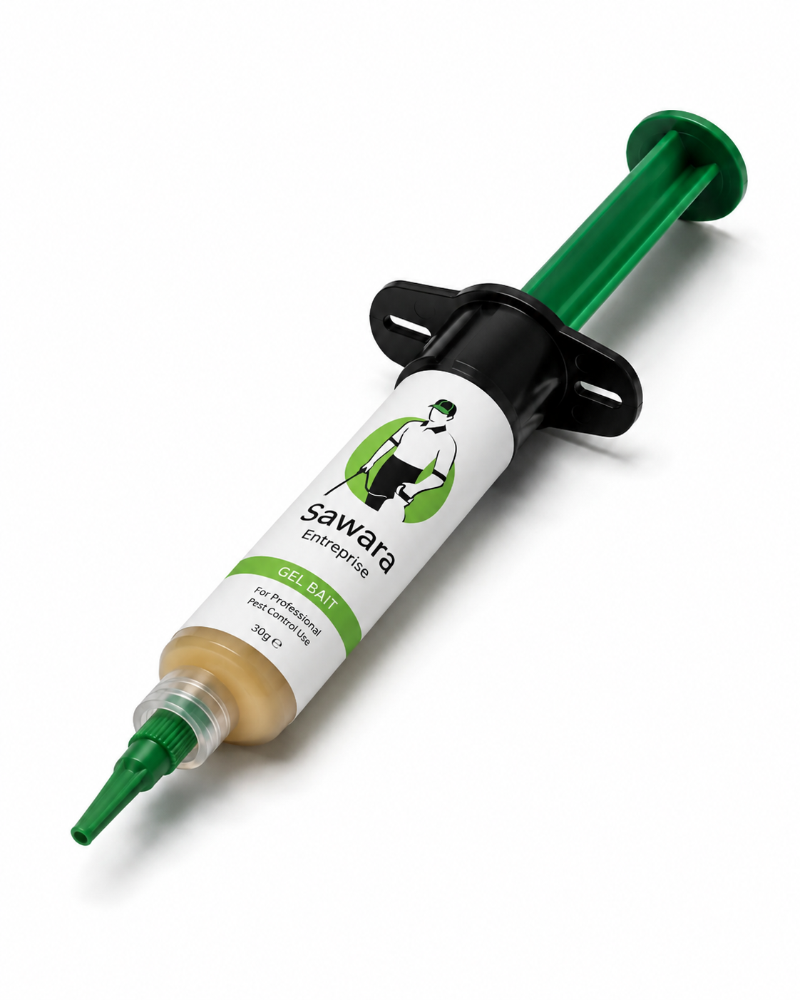

SawaraEntreprise
77 552 64 19
Devis WhatsApp
WhatsApp
Les fourmis envahissent cuisines, placards et structures en bois à Dakar toute l'année. Un spray de surface ne suffit pas : sans atteindre la reine, la colonie revient. Sawara Entreprise identifie l'espèce et traite à la source.

Une colonie de fourmis peut compter plusieurs dizaines de milliers d'individus, dont la grande majorité reste invisible. Les fourmis ouvrières que vous voyez ne représentent qu'une petite fraction de la colonie — celles chargées de chercher la nourriture. La reine, elle, reste protégée en profondeur dans le nid.
Les sprays insecticides du commerce tuent les ouvrières au contact mais n'atteignent pas la reine. Pire : ils peuvent disperser la colonie et multiplier les points d'infestation dans le même local. Certaines espèces, comme les fourmis pharaon, réagissent à la pression chimique en se scindant en plusieurs sous-colonies — ce qu'on appelle la scissiparité.
À Dakar, la chaleur persistante et l'humidité de l'hivernage favorisent la prolifération des fourmis toute l'année. Les fourmis de maison s'installent dans les cuisines et les zones humides. Les fourmis rouges colonisent les cours et jardins. Les fourmis charpentières creusent silencieusement les structures en bois. Chaque espèce demande une approche différente. Voir aussi notre page sur la désinsectisation au Sénégal pour comprendre la démarche globale.

Identifier l'espèce avant d'intervenir est essentiel. Sawara adapte son protocole à ce que le diagnostic révèle sur place.
Les plus courantes dans les cuisines et salles de bain à Dakar. Suivent des pistes chimiques vers les sources de nourriture et les zones humides. Traitement par gel appât : les ouvrières rapportent le produit jusqu'à la reine, ce qui détruit la colonie à la source.
Espèce agressive présente dans les cours, jardins et espaces verts. La piqûre provoque une douleur vive et peut entraîner des réactions allergiques sérieuses. Traitement ciblé sur les fourmilières et les zones d'activité extérieure.
Ne consomment pas le bois mais y creusent des galeries pour nicher, fragilisant silencieusement les poutres, encadrements et mobilier. Traitement par injection dans les zones infestées ou pulvérisation ciblée selon l'étendue constatée.
Dans les restaurants et cuisines professionnelles, la présence de fourmis représente un risque sanitaire réglementaire. Sawara adapte son protocole aux exigences de la restauration avec des interventions discrètes, hors service, rapport disponible si nécessaire. Voir aussi le traitement cafards Dakar pour les infestations combinées.
Fourmilières dans les jardins, sous les dalles ou en bordure de fondations. Traitement à la source pour couper la migration vers l'intérieur, avec barrière chimique périphérique si le risque d'infiltration est élevé.
Identification des sources d'attraction : denrées mal stockées, humidité, résidus alimentaires, joints défectueux. Des ajustements simples réduisent significativement le risque de retour après traitement.
Fourmis de maison, rouges ou charpentières — chaque espèce demande une approche différente. Le technicien identifie l'espèce, suit les pistes et repère les zones de nidification avant de choisir le produit adapté.
Gel appât (les ouvrières rapportent le produit jusqu'à la reine), pulvérisation ciblée sur les pistes actives, ou barrière chimique selon l'espèce. L'objectif est d'atteindre la colonie entière, pas seulement les ouvrières visibles.
Identification des sources d'attraction et des points d'entrée à colmater. Recommandations concrètes : stockage des aliments, gestion de l'humidité, joints à réparer. La prévention fait partie intégrante de chaque intervention.
La disparition complète prend de quelques jours à deux semaines selon l'espèce et la taille de la colonie. Un suivi est possible pour vérifier l'efficacité et intervenir si une activité résiduelle persiste.
Les fourmis s'adaptent à tous les environnements. Sawara adapte son protocole à chaque contexte d'intervention.
Domicile : cuisines, salles de bain, placards, garde-manger. Traitement discret, consignes claires, respect des personnes et animaux présents.
Jardin et extérieur : fourmilières sous dalles, bordures de fondations, espaces verts. Traitement à la source avec barrière chimique périphérique si nécessaire pour empêcher la migration vers l'intérieur.
Milieu professionnel : restauration, hôtellerie, bureaux. Intervention planifiée hors heures de service, produits compatibles avec les exigences sanitaires de la restauration, rapport d'intervention disponible si requis.
Sawara intervient principalement dans le Grand Dakar. Des déplacements sont possibles selon la nature et l'urgence de la demande.